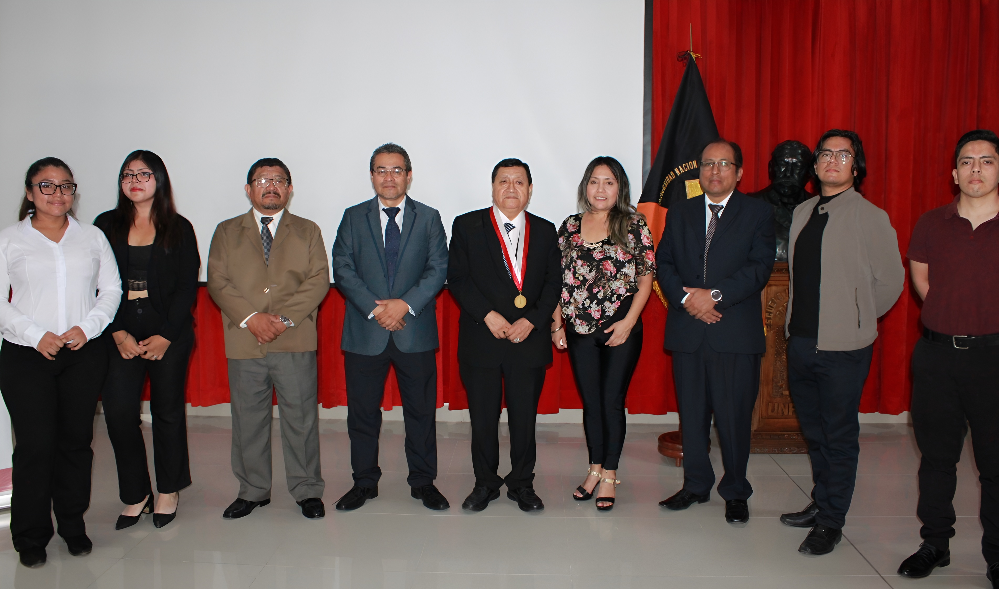

Noticias FIEI ·
Transformación digital e inteligencia artificial reúnen a autoridades, docentes y estudiantes de la UNFV
La jornada académica abrió un espacio de diálogo sobre el impacto de la inteligencia artificial y la transformación digital.

El 24 de setiembre se realizó la Primera Jornada de Transformación Digital e Inteligencia Artificial de la Universidad Nacional Federico Villarreal, con la participación de autoridades, docentes y estudiantes.
Las exposiciones abordaron la transformación digital estratégica y el uso de inteligencia artificial en la investigación. Participaron el MBA Javier Eduardo Suárez Niño y la Dra. Maritte Giovanna Fierro Bravo.
La actividad invitó a reflexionar sobre el uso crítico, responsable e íntegro de estas tecnologías y sobre las oportunidades que ofrecen para la investigación y la gestión universitaria.